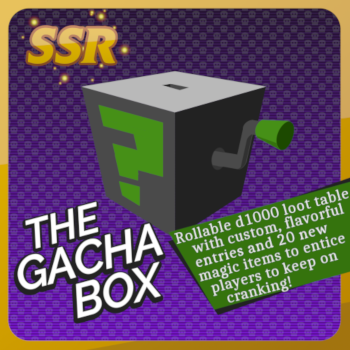

TABLETOP CONTENT
I design content for tabletop role-playing games, both offline and for VTT solutions like Roll20, FantasyGrounds, and FoundryVTT. Available on Roll20 and DriveThruRPG.
Potion of Unknown Origin: Contains 100 cards with permanent effects ranging from magical to mutative—all of which introduce a new dimension of the game to you and your players. Use it to supplement your wild magic table, use it as a tempting treasure, use it as a risk vs. reward scenario. The potion only wishes to be imbibed.
Deck of Many Bones: The Deck of Many Bones introduces to your campaign new and fun ways to view a fantasy staple. This magical item was crafted to share with the world its creator's enthusiasm for skeletons, so its 60 cards include a wide array of themed items, encounters, boons, spells, and characters.
Chiseled Token Frames: Presentation matters. A character could have the sweetest, most accurate portrait, and it isn't going to mean much if it's wrapped in the wrong frame. That's the stance I take to virtual tabletop, as both a player and DM, and why I created these sleek but not overly elaborate token frames.
The Gacha Box: A fun tool that invites players to insert a few coins for the chance to win big. To that end, The Gacha Box includes 20 new magical items to encourage your players to roll the dice, and 980 flavorful items to pop out when players fall short of the big prize.

MODS
Mods for Sid Meier's Civilization VI. You can find my full library of mods on the Steam Workshop
Watchtower Improvement: A full-featured improvement independent of civilizations, city-states, and leaders. A great deal of effort went into its 20 distinct variations. Besides visual appeal and change according to technological advancement, this allows the improvement to be placed unobtrusively on existing features without removing them.
CIVITAS Sassanid: The Sassanid civilization led by Shahanshahs Kawad I and Shapur I, and Banbishnan banbishn Boran.
Atelier Civilization: Introduces the Atelier video game series as a civilization led by Totori, Ilmeria, Linca, Rorona, Sophie, Ayesha, and Lydie & Suelle.
Wondrous Goody Huts: Adds 11 new tribal village rewards.
First to Circumnavigate: Brings back the Civ IV mechanic: The first civilization to circumnavigate the world gets +1 movement to all naval units.